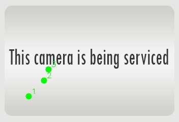
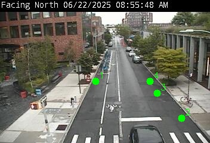

<!DOCTYPE html>
<html>
<head>
    
    <meta http-equiv="content-type" content="text/html; charset=UTF-8" />
    <script src="https://cdn.jsdelivr.net/npm/leaflet@1.9.3/dist/leaflet.js"></script>
    <script src="https://code.jquery.com/jquery-3.7.1.min.js"></script>
    <script src="https://cdn.jsdelivr.net/npm/bootstrap@5.2.2/dist/js/bootstrap.bundle.min.js"></script>
    <script src="https://cdnjs.cloudflare.com/ajax/libs/Leaflet.awesome-markers/2.0.2/leaflet.awesome-markers.js"></script>
    <link rel="stylesheet" href="https://cdn.jsdelivr.net/npm/leaflet@1.9.3/dist/leaflet.css"/>
    <link rel="stylesheet" href="https://cdn.jsdelivr.net/npm/bootstrap@5.2.2/dist/css/bootstrap.min.css"/>
    <link rel="stylesheet" href="https://netdna.bootstrapcdn.com/bootstrap/3.0.0/css/bootstrap-glyphicons.css"/>
    <link rel="stylesheet" href="https://cdn.jsdelivr.net/npm/@fortawesome/fontawesome-free@6.2.0/css/all.min.css"/>
    <link rel="stylesheet" href="https://cdnjs.cloudflare.com/ajax/libs/Leaflet.awesome-markers/2.0.2/leaflet.awesome-markers.css"/>
    <link rel="stylesheet" href="https://cdn.jsdelivr.net/gh/python-visualization/folium/folium/templates/leaflet.awesome.rotate.min.css"/>
    
            <meta name="viewport" content="width=device-width,
                initial-scale=1.0, maximum-scale=1.0, user-scalable=no" />
            <style>
                #map_98b461168417bc33686de94f4ad477a6 {
                    position: relative;
                    width: 100.0%;
                    height: 100.0%;
                    left: 0.0%;
                    top: 0.0%;
                }
                .leaflet-container { font-size: 1rem; }
            </style>

            <style>html, body {
                width: 100%;
                height: 100%;
                margin: 0;
                padding: 0;
            }
            </style>

            <style>#map {
                position:absolute;
                top:0;
                bottom:0;
                right:0;
                left:0;
                }
            </style>

            <script>
                L_NO_TOUCH = false;
                L_DISABLE_3D = false;
            </script>

        
</head>
<body>
    
    
            <div class="folium-map" id="map_98b461168417bc33686de94f4ad477a6" ></div>
        
</body>
<script>
    
    
            var map_98b461168417bc33686de94f4ad477a6 = L.map(
                "map_98b461168417bc33686de94f4ad477a6",
                {
                    center: [40.718338666666675, -73.96574266666666],
                    crs: L.CRS.EPSG3857,
                    ...{
  "zoom": 13,
  "zoomControl": true,
  "preferCanvas": false,
}

                }
            );

            

        
    
            var tile_layer_03e863b8c178bcbf74f9c29b1fc051c2 = L.tileLayer(
                "https://{s}.basemaps.cartocdn.com/light_all/{z}/{x}/{y}{r}.png",
                {
  "minZoom": 0,
  "maxZoom": 20,
  "maxNativeZoom": 20,
  "noWrap": false,
  "attribution": "\u0026copy; \u003ca href=\"https://www.openstreetmap.org/copyright\"\u003eOpenStreetMap\u003c/a\u003e contributors \u0026copy; \u003ca href=\"https://carto.com/attributions\"\u003eCARTO\u003c/a\u003e",
  "subdomains": "abcd",
  "detectRetina": false,
  "tms": false,
  "opacity": 1,
}

            );
        
    
            tile_layer_03e863b8c178bcbf74f9c29b1fc051c2.addTo(map_98b461168417bc33686de94f4ad477a6);
        
    
            var marker_a82b62668cf65b239e6930d2a55b7423 = L.marker(
                [40.672744, -73.968781],
                {
}
            ).addTo(map_98b461168417bc33686de94f4ad477a6);
        
    
            var icon_7b38b7c1e019829b24894ac30fc75701 = L.AwesomeMarkers.icon(
                {
  "markerColor": "red",
  "iconColor": "white",
  "icon": "camera",
  "prefix": "fa",
  "extraClasses": "fa-rotate-0",
}
            );
        
    
        var popup_cff373150ac51c54eb32c049c91de3eb = L.popup({
  "maxWidth": 320,
});

        
            
                var html_6d9b1f44f8ce37be602d4b4ff3d058e0 = $(`<div id="html_6d9b1f44f8ce37be602d4b4ff3d058e0" style="width: 100.0%; height: 100.0%;">     <strong>Grand Army Plaza</strong><br>     0 Open / 3 Spots<br>          </div>`)[0];
                popup_cff373150ac51c54eb32c049c91de3eb.setContent(html_6d9b1f44f8ce37be602d4b4ff3d058e0);
            
        

        marker_a82b62668cf65b239e6930d2a55b7423.bindPopup(popup_cff373150ac51c54eb32c049c91de3eb)
        ;

        
    
    
                marker_a82b62668cf65b239e6930d2a55b7423.setIcon(icon_7b38b7c1e019829b24894ac30fc75701);
            
    
            var marker_83ef253f1a3f3d97112ea2367fa4ad60 = L.marker(
                [40.72231, -73.957447],
                {
}
            ).addTo(map_98b461168417bc33686de94f4ad477a6);
        
    
            var icon_fcdf9c2a97337fcea6e61cbef4458978 = L.AwesomeMarkers.icon(
                {
  "markerColor": "red",
  "iconColor": "white",
  "icon": "camera",
  "prefix": "fa",
  "extraClasses": "fa-rotate-0",
}
            );
        
    
        var popup_5444d8312a67ce3a6b92a54ef6da14b3 = L.popup({
  "maxWidth": 320,
});

        
            
                var html_5dd18793763df2c6e6903c2ae92029c2 = $(`<div id="html_5dd18793763df2c6e6903c2ae92029c2" style="width: 100.0%; height: 100.0%;">     <strong>Wythe Ave @ North 12 St</strong><br>     0 Open / 4 Spots<br>          </div>`)[0];
                popup_5444d8312a67ce3a6b92a54ef6da14b3.setContent(html_5dd18793763df2c6e6903c2ae92029c2);
            
        

        marker_83ef253f1a3f3d97112ea2367fa4ad60.bindPopup(popup_5444d8312a67ce3a6b92a54ef6da14b3)
        ;

        
    
    
                marker_83ef253f1a3f3d97112ea2367fa4ad60.setIcon(icon_fcdf9c2a97337fcea6e61cbef4458978);
            
    
            var marker_62282b63a3e65091bbf1a29be4fa53f7 = L.marker(
                [40.728739, -74.007137],
                {
}
            ).addTo(map_98b461168417bc33686de94f4ad477a6);
        
    
            var icon_b8f0a08106d59a431d6d8e62f2cb261d = L.AwesomeMarkers.icon(
                {
  "markerColor": "green",
  "iconColor": "white",
  "icon": "camera",
  "prefix": "fa",
  "extraClasses": "fa-rotate-0",
}
            );
        
    
        var popup_0e132d334a08465981ff3a38bf13315b = L.popup({
  "maxWidth": 320,
});

        
            
                var html_4283d5e3e9cc83e93c896d36d34ec78d = $(`<div id="html_4283d5e3e9cc83e93c896d36d34ec78d" style="width: 100.0%; height: 100.0%;">     <strong>West Houston @ Hudson St</strong><br>     2 Open / 2 Spots<br>          </div>`)[0];
                popup_0e132d334a08465981ff3a38bf13315b.setContent(html_4283d5e3e9cc83e93c896d36d34ec78d);
            
        

        marker_62282b63a3e65091bbf1a29be4fa53f7.bindPopup(popup_0e132d334a08465981ff3a38bf13315b)
        ;

        
    
    
                marker_62282b63a3e65091bbf1a29be4fa53f7.setIcon(icon_b8f0a08106d59a431d6d8e62f2cb261d);
            
    
            var marker_a76195b10419b7bb9d3f21b398d97b42 = L.marker(
                [40.709853, -73.991746],
                {
}
            ).addTo(map_98b461168417bc33686de94f4ad477a6);
        
    
            var icon_baa88187036e5dfbcaf1323e5c5bec9f = L.AwesomeMarkers.icon(
                {
  "markerColor": "red",
  "iconColor": "white",
  "icon": "camera",
  "prefix": "fa",
  "extraClasses": "fa-rotate-0",
}
            );
        
    
        var popup_96446c9eadb25fca81c9fad0e9ba91e0 = L.popup({
  "maxWidth": 320,
});

        
            
                var html_5c312d74a5948adb76560ecc5b56c189 = $(`<div id="html_5c312d74a5948adb76560ecc5b56c189" style="width: 100.0%; height: 100.0%;">     <strong>South Street @ Pike Street</strong><br>     0 Open / 3 Spots<br>          </div>`)[0];
                popup_96446c9eadb25fca81c9fad0e9ba91e0.setContent(html_5c312d74a5948adb76560ecc5b56c189);
            
        

        marker_a76195b10419b7bb9d3f21b398d97b42.bindPopup(popup_96446c9eadb25fca81c9fad0e9ba91e0)
        ;

        
    
    
                marker_a76195b10419b7bb9d3f21b398d97b42.setIcon(icon_baa88187036e5dfbcaf1323e5c5bec9f);
            
    
            var marker_f564c88294b0168df50fa5d7f5a4f290 = L.marker(
                [40.690593, -73.918328],
                {
}
            ).addTo(map_98b461168417bc33686de94f4ad477a6);
        
    
            var icon_57d7a397749714caf504914e237a4ed9 = L.AwesomeMarkers.icon(
                {
  "markerColor": "red",
  "iconColor": "white",
  "icon": "camera",
  "prefix": "fa",
  "extraClasses": "fa-rotate-0",
}
            );
        
    
        var popup_46eb177f34d0918225382effa014d3ba = L.popup({
  "maxWidth": 320,
});

        
            
                var html_0c7bcbea0241e12cb364d90e175c7bb4 = $(`<div id="html_0c7bcbea0241e12cb364d90e175c7bb4" style="width: 100.0%; height: 100.0%;">     <strong>Bushwick Ave @ Gates Ave</strong><br>     0 Open / 1 Spots<br>          </div>`)[0];
                popup_46eb177f34d0918225382effa014d3ba.setContent(html_0c7bcbea0241e12cb364d90e175c7bb4);
            
        

        marker_f564c88294b0168df50fa5d7f5a4f290.bindPopup(popup_46eb177f34d0918225382effa014d3ba)
        ;

        
    
    
                marker_f564c88294b0168df50fa5d7f5a4f290.setIcon(icon_57d7a397749714caf504914e237a4ed9);
            
    
            var marker_cdaad9f75f675e0e3076fa8420826f64 = L.marker(
                [40.785793, -73.951017],
                {
}
            ).addTo(map_98b461168417bc33686de94f4ad477a6);
        
    
            var icon_b4698d6898c9fc151155208aef50ceaf = L.AwesomeMarkers.icon(
                {
  "markerColor": "green",
  "iconColor": "white",
  "icon": "camera",
  "prefix": "fa",
  "extraClasses": "fa-rotate-0",
}
            );
        
    
        var popup_4da024ef8b21a9878115dd4d4fb4d2b3 = L.popup({
  "maxWidth": 320,
});

        
            
                var html_7613e929b90af7ae616db971cd805fb4 = $(`<div id="html_7613e929b90af7ae616db971cd805fb4" style="width: 100.0%; height: 100.0%;">     <strong>Lexington Ave @ 96 St</strong><br>     1 Open / 3 Spots<br>          </div>`)[0];
                popup_4da024ef8b21a9878115dd4d4fb4d2b3.setContent(html_7613e929b90af7ae616db971cd805fb4);
            
        

        marker_cdaad9f75f675e0e3076fa8420826f64.bindPopup(popup_4da024ef8b21a9878115dd4d4fb4d2b3)
        ;

        
    
    
                marker_cdaad9f75f675e0e3076fa8420826f64.setIcon(icon_b4698d6898c9fc151155208aef50ceaf);
            
</script>
</html>